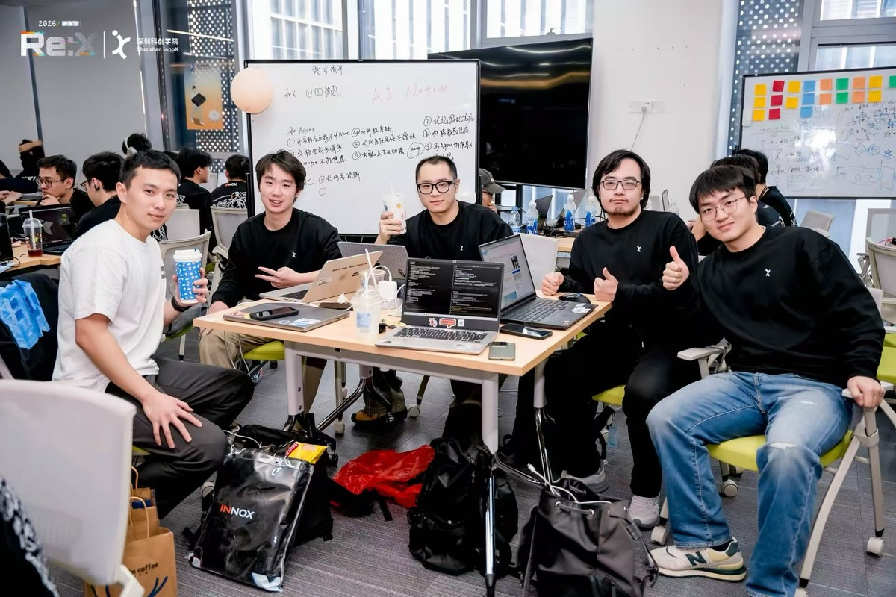
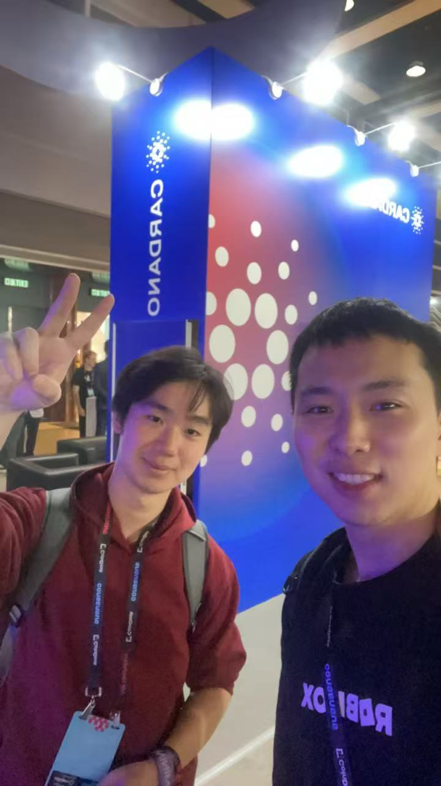
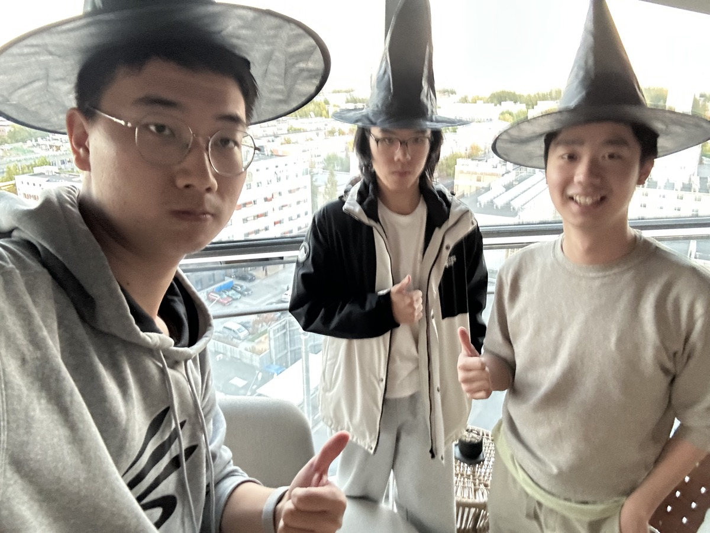

● Available · Beijing → Silicon Valley
Junior undergrad at BJTU Zhan Tianyou Honors College + dual degree at Peking University. Research in AI for Medicine & Multi-Agent Systems — deployed at CAS and CUHK. Co-founded two startups. Fluent in English, German, Chinese.
// Life



// Projects
Collaborated with CUHK LAMB Lab to develop advanced cell imaging and phase unwrapping algorithms. First-author papers & patents. Deploying at Tsinghua School of Medicine and Shenzhen Bay Lab.
With Chinese Academy of Sciences (AIR-CAS) — aggregated ionospheric data from Hainan, Beijing & multiple stations. Built a semi-supervised object detection system. Deployed across China's monitoring network.
Co-founded. Photo → caffeine content in 1 second. Identifies drinks & snacks to help users make healthier choices. Currently under App Store review.
Co-founded at the World's First Haunted House Hackathon. WeChat mini-program for anonymous emotional expression, AI-driven ProactiveCare for mental health, and emotion resonance matching. Privacy-first with one-way hashing.
// About
I'm Jian (颜简) — a builder who happens to be in university. I learn fast, ship faster. My research doesn't live in papers — it gets deployed.
Currently: 4+4 B.S.+Ph.D. at BJTU Zhan Tianyou Honors College (Electrical Engineering) + dual degree in Economics at Peking University NSD. Research on AI for Medicine with CUHK. Building consumer apps on the side.
I apply Richard Hamming's learning methodology — systematically master a field, then find the important problems. Fluent in English · German · Chinese. Previously passed the PLA Air Force pilot selection (decided to code instead).
// Education
// Awards
// Deepdive
Long-form notes from my systematic study of technical subjects.